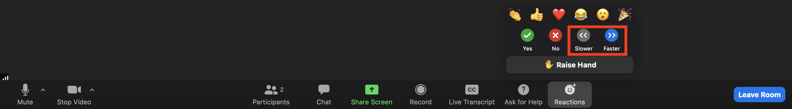
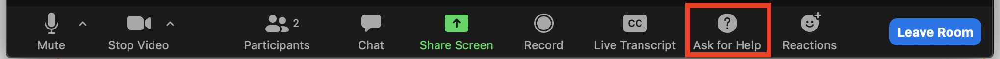

Logistics
Overview
Data Science for Environmental Health (DaSEH) is a short course that combines online and in-person modalities to help professionals get the most out of this training.
We focus on building R skills in the online portion of the course. When in-person, we focus on project skills, working with real datasets.
September 30 - October 10 (online/virtual course) + October 23-25 (in person in Seattle)
Audience
We have designed DaSEH for the following audience:
- Practitioners, professionals, or researchers in the environmental health space who want programming and data science skills
- Educators who want programming and data science skills with a focus on environmental health
- Practitioners, professionals, researchers, or advanced students from Minority Serving Institutions or institutions without training opportunities like DaSEH.
We especially encourage participants to join who are underrepresented in data and health sciences.
Learning Objectives
By the end of the course, learners should be comfortable:
- Reading data into R
- Recoding and manipulating data
- Using R add-on packages
- Making exploratory plots
- Performing basic statistical tests
- Understanding basic programming syntax
- Creating reproducible R documents
- Collaborating on and developing independent projects in environmental health data science
Online Portion
When & Where
- Dates : September 30 - October 10
- Time : 10:30am - 2pm Pacific Time
- Course lectures and labs will be online through Zoom
- Zoom link and Slack link will be emailed to students
- Communication will mainly occur through Slack
Format
Each class will consist of 2 or 3 hour-long modules.
Each module features a lecture and an R programming lab, where students apply the skills taught in the modules to real data in breakout rooms.
Class sessions will be recorded and later posted.
If you have a question not covered during class, please post it on Slack. This allows everyone to see it. If another student does not answer your question (which we encourage!), we will try to answer it within 24 hours. If you feel uncomfortable posting a question publicly, let a TA or instructor know your question and we will post it for you anonymously.
To get the most out of this class, if possible, we suggest working virtually with a large monitor or two screens. This setup allows you to follow along on Zoom while also doing the hands-on coding.
Please click here for details about using Zoom.
Zoom + Working Virtually
- Please be aware that there is the option to use closed captioning:

closed captioning on zoom
- During lectures you can indicate how you feel about the pace of the course like so:
reactions about pace
- In breakout room sessions you can ask for help like so:
ask for help
- For directions on how to change breakout rooms click here.
In-person Portion
When & Where
- Dates: October 23-25
- Time: 9:30 am - 4 pm Pacific Time
- The Code-a-thon will take place at Fred Hutch Cancer Center in Seattle, WA.
How
- Although DaSEH itself is free, participants will need to pay travel costs to get to Seattle (flight, train, hotel, etc.). Please select whatever mode of transportation works best for you.
- Travel stipends are available for select participants. You must indicate whether you would like to be considered for a travel stipend in the application. If selected for a travel stipend, Fred Hutch and DaSEH will work with you to book travel.
Format
- Each day will consist of 1-2 mini-modules to cover a collaborative topic (such as working on GitHub)
- The majority of the day will consist of working in teams on a collaborative research project that applies the R programming skills learned in the online course.
- DaSEH organizers will rotate around to help debug or tackle questions.
Course Evaluation
Course evaluations help us to improve the course with your feedback. We will be using surveys throughout DaSEH to help make it a rewarding experience. Some surveys may be used for research to help the field better understand how to educate individuals about data science and environmental health topics. We will let you know if a survey is for research purposes.
Assignments
Homework (besides installing necessary software) is strictly optional. We encourage it to reinforce your learning.
Code of Conduct
We would like to create an open, safe, welcoming, diverse, inclusive, intellectually stimulating, and hopefully fun class experience.
We strive to be a space in which individual differences are respected, so that each individual can reach their fullest potential.
Please familiarize yourself with our Code of Conduct here.
Quick Links:
This work is licensed under a Creative Commons Attribution-NonCommercial-ShareAlike 4.0 International License.
 DaSEH is funded by the National Institute of Environmental Health Sciences 1R25ES035590-01.
DaSEH is funded by the National Institute of Environmental Health Sciences 1R25ES035590-01.